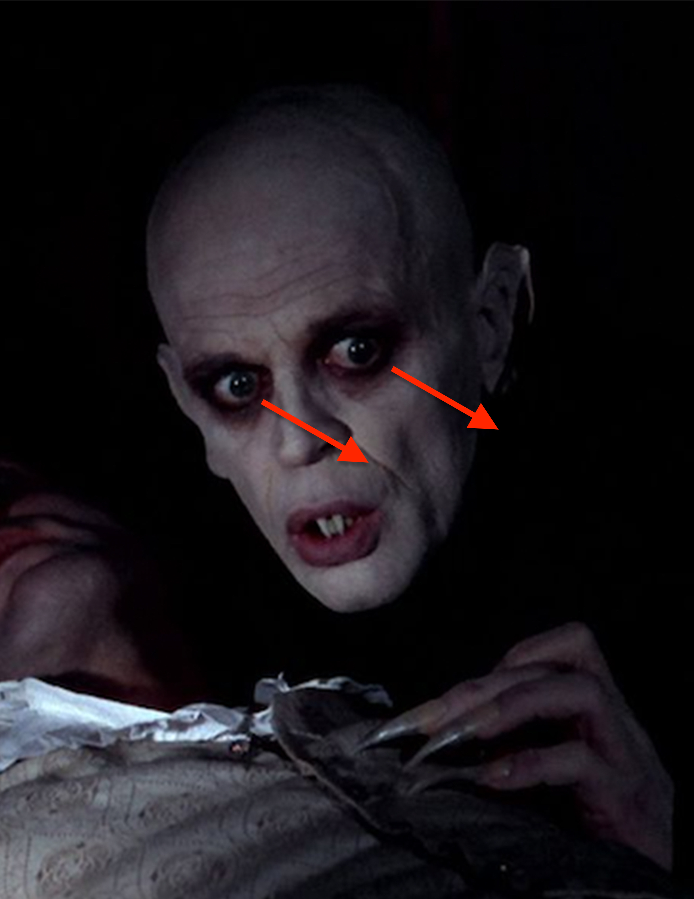
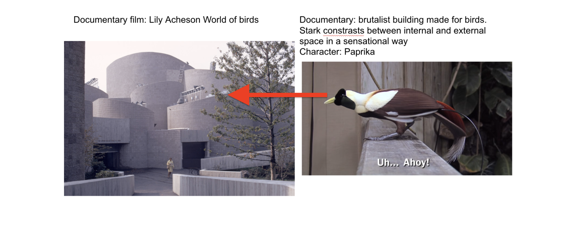

1. Pathological looker: Klaus Kinski playing Nosferatu in Werner Herzog's adaptaion of Nosferatu, adapted from Bram Stoker's 'Dracula'. (Translation of Werner Herzog's script) "After a moment of hesitation, NOSFERATU surrenders like a satiated infant to drink again." "NOSFERATU, bent over her neck, remains still for a long time, reminiscent of a spider holding still as it sucks from its victim." "He glides just like a silhouette". "A look of unbelievable suffering crosses the VAMPIRES’s face. and he sighs deeply.""
2. Logical looker: Paprika, a red bird of paradise and a long time resident of the Lila Acheson Wallace World of Birds. Paprika has developed a human-derived vocabulary in captivity. Paprika was caught in his cell trying to have sex with a hose nosel. Once the Bronx Zoo staff got windo f this, they made a female bird puppet for him.
Relevant geography of Paprika: "Lila Acheson Wallace World of Birds, Bronx Zoo". The only brutalist building designed for birds. Tentative connection between anthropomorphic tendencies and the architecture of the building. From an aerial perspective (the perspective of a bird), the cylindrical concrete of the exterior of "Lily Acheson Wallace World of Birds" appear as decapitated trees.
